- Módulo: Sistemas Operativos
- Título del trabajo Registros de evento local.
- Componentes del grupo: Isabel Quintero Sánchez
- Curso Académico: 2013/2014
- Fecha de entrega: 17 de Junio de 2014
Debemos activar unas directivas de seguridad, para auditar los inicios de sesión al sistema (Correctos e incorrectos).Para llegar hasta ese punto debemos abrir las Herramientas administrativas-> Directivas de Seguridad Local.
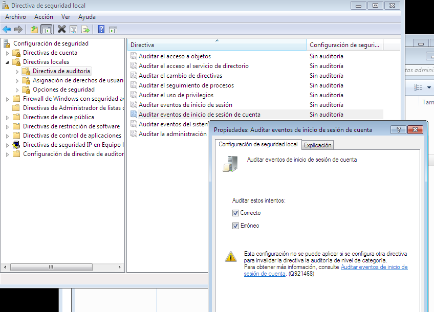Luego debemos poner el nombre NETBIOS de la máquina "Quintero2", ya que he utilizado Windows7, reiniciamos la MV y creamos los usuarios "alu1,alu2 y alu3".
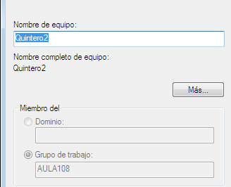 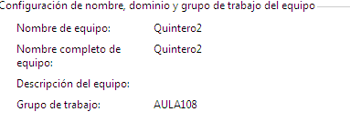 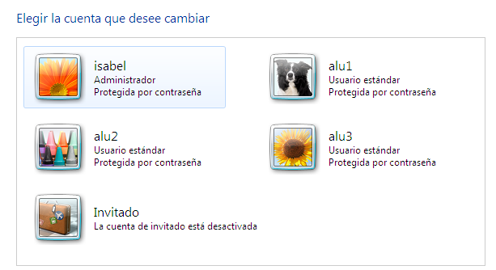Hacemos las siguientes acciones:
Buscamos en el sistema, la herramienta visor de sucesos y comprobamos cómo se registran los eventos anteriores
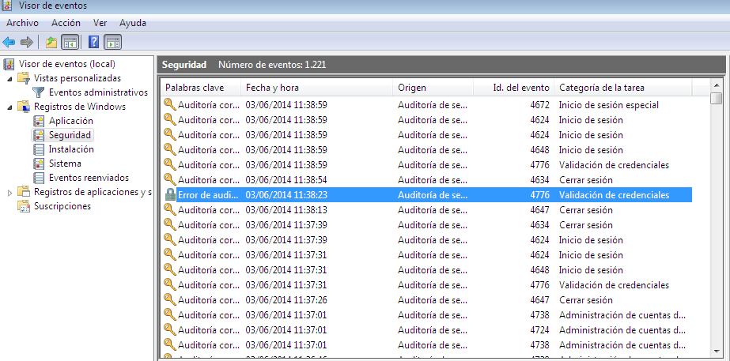Utilizamos Debian7 y le cambiamos el nombre de la máquina mediante el comando hostname, por "Quintero3".
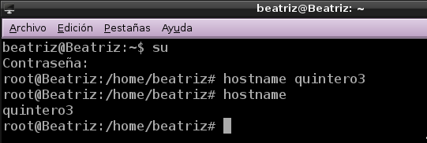Instalamos el programa Webmin,como tenemos problemas de dependencias de paquetes, instalando el paquete deb, ejecutamos el comando "apt-get install -f".
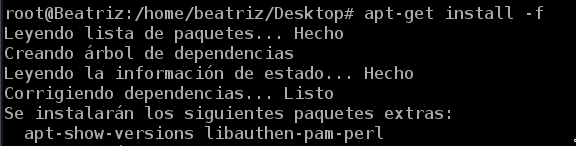Después de haber realizado ese paso, para instalarlo definitivamente usamos "dpkg -i webmin_1.690_all.deb"
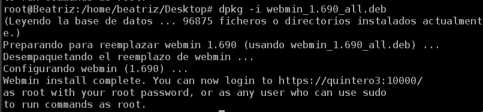Para iniciar el servicio Webmin, ejecutamos: "/etc/init.d/webmin start", y para acceder al programa, abrimos un navegador web y ponemos "https://localhost:10000".
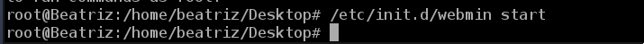 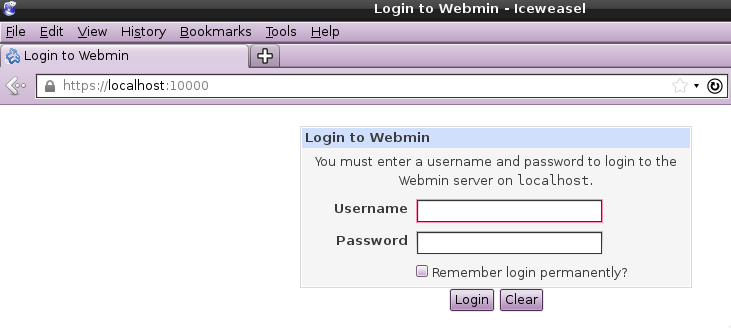Vamos a analizar los ficheros de log con la herramienta anterior. Para ello vamos a las opciones del menú "System -> System Log".
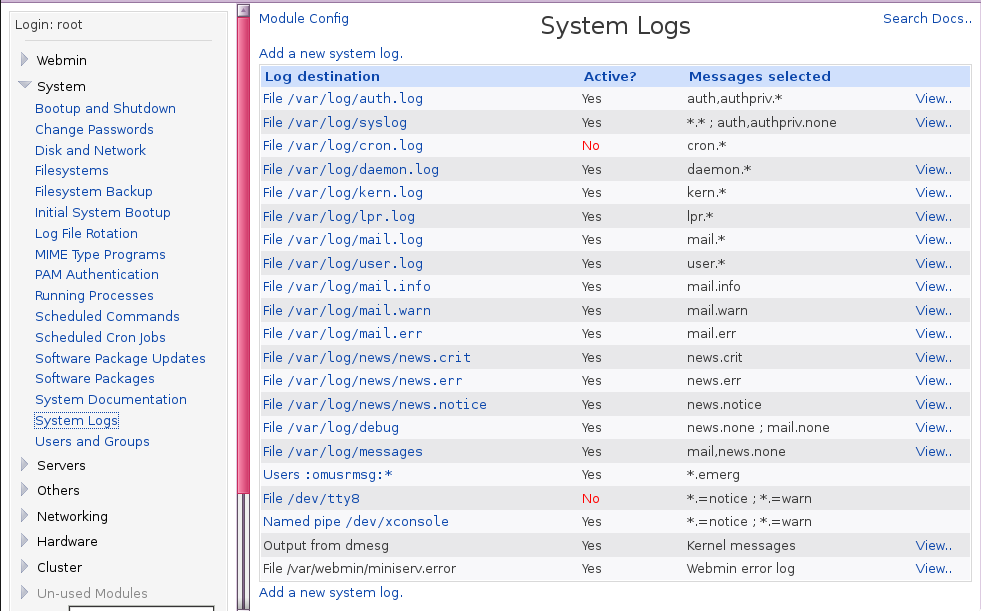Configuración de Syslog
Consultamos el fichero /etc/rsyslog.d/50-default.confy añadimos una nueva línea local0.* /var/log/nombredelalumno/prueba-local.log. Con el usuario root, creamos el fichero vacío /var/log/nombredelalumno/prueba-local.log.
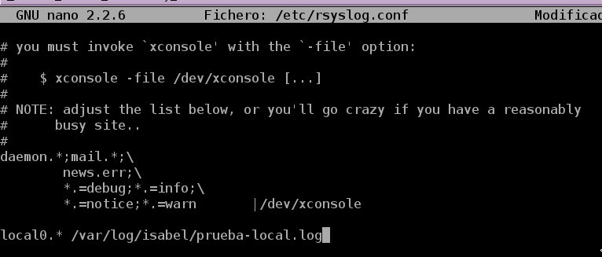 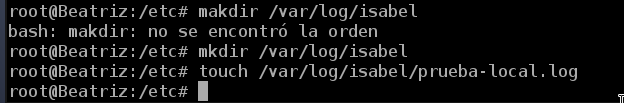Ahora debemos reiniciar el servicio rsyslog, para que se recargue la nueva configuración.
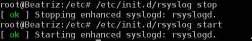Comprobar Rsyslog
Para ver que el fichero log está vacío por el momento, utilizamos el comando: cat /var/log/nombredelalumno/prueba-local.log. Luego, usar el comando logger para generar mensajes de log en el fichero anterior. Por ejemplo: logger -p local0.info "Hola Mundo".
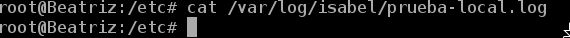 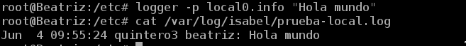Ahora vamos a configurar logrotate para generar rotaciones de nuestro fichero de log. Para ello crearemos el fichero /etc/logrotate.d/nombre-del-alumno con el siguiente contenido:
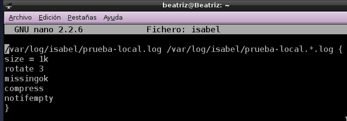Vamos a generar muchos mensajes de log en el fichero de registro de eventos, lo hacemos invocando el comando siguiente para aumentar el tamaño del registro de log con la información contenida en un fichero de texto: logger -p local0.notice -t ETC-MOTD -f /etc/motd
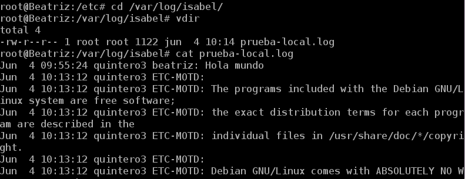Para que se dispare la rotación de log automáticamente podemos reiniciar el equipo. Sin reiniciar el equipo, podemos ejecutar manualmente el programa de rotación logrotate de la siguiente forma: /usr/sbin/logrotate -f /etc/logrotate.conf.Comprobamos que el fichero cambia de tamaño, y que efectivamente se ha producido la rotación de los ficheros de log.
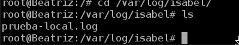 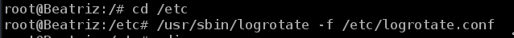 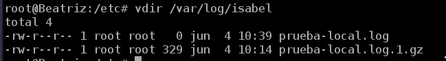